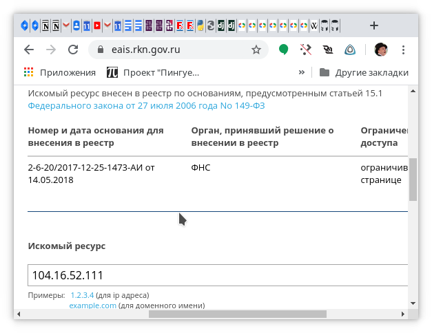

При доступе из Firefox с настроенным списком antizapret к https://help.figma.com возникает connection reset. Это эффект цензуры (через прокси friGate в Chromium достп нормальный). antizapret в браузере настроен и работает, например доступ к http://www.profinance.ru нормальный, несмотря на блокировку.
Я понимаю так, что проблема в том, что имя DNS разрешается в адрес, попавший в списки блокировки и блокируемый с помощью connection reset.
Решается ли такая проблема с помощью antizapret?
2020-04-09T18:49:57.251Z
ValdikSS
В какие адреса у вас резолвится этот домен? У меня он не проксируется.
Non-authoritative answer:
help.figma. com canonical name = figma.zendesk. com.
Name: figma. zendesk. com
Address: 104.16.52.111
Name: figma. zendesk. com
Address: 104.16.51.111
Name: figma. zendesk. com
Address: 104.16.54.111
Name: figma. zendesk. com
Address: 104.16.53.111
Name: figma. zendesk. com
Address: 104.16.55.111
2020-04-10T19:53:14.205Z
ValdikSS
Эти адреса не должны проксироваться. У меня открывается сайт со включённым Антизапретом.
Следуйте инструкции по диагностике, описанные в https://antizapret.prostovpn.org/help.html.
2020-04-10T20:56:44.281Z
nnseva(Vsevolod Novikov)
Вот сессия curl при попытке соединения из России:
seva@SEVA-WORK:~$ curl https://help.figma.com/ -vvv >/dev/null
% Total % Received % Xferd Average Speed Time Time Time Current
Dload Upload Total Spent Left Speed
0 0 0 0 0 0 0 0 --:--:-- --:--:-- --:--:-- 0* Trying 104.16.54.111:443...
* TCP_NODELAY set
* connect to 104.16.54.111 port 443 failed: В соединении отказано
* Trying 104.16.52.111:443...
* TCP_NODELAY set
* connect to 104.16.52.111 port 443 failed: В соединении отказано
* Trying 104.16.51.111:443...
* TCP_NODELAY set
* connect to 104.16.51.111 port 443 failed: В соединении отказано
* Trying 104.16.53.111:443...
* TCP_NODELAY set
* connect to 104.16.53.111 port 443 failed: В соединении отказано
* Trying 104.16.55.111:443...
* TCP_NODELAY set
* connect to 104.16.55.111 port 443 failed: В соединении отказано
* Failed to connect to help.figma.com port 443: В соединении отказано
0 0 0 0 0 0 0 0 --:--:-- --:--:-- --:--:-- 0
* Closing connection 0
curl: (7) Failed to connect to help.figma.com port 443: В соединении отказано
Вот сессия соединения curl (начало) с сервера из Германии:
seva@*****_com_de:~$ curl https://help.figma.com/ -vvv >/dev/null
% Total % Received % Xferd Average Speed Time Time Time Current
Dload Upload Total Spent Left Speed
0 0 0 0 0 0 0 0 --:--:-- --:--:-- --:--:-- 0* Trying 104.16.54.111...
* TCP_NODELAY set
* Connected to help.figma.com (104.16.54.111) port 443 (#0)
* ALPN, offering h2
* ALPN, offering http/1.1
* successfully set certificate verify locations:
* CAfile: /etc/ssl/certs/ca-certificates.crt
CApath: /etc/ssl/certs
} [5 bytes data]
* TLSv1.2 (OUT), TLS handshake, Client hello (1):
} [212 bytes data]
* TLSv1.2 (IN), TLS handshake, Server hello (2):
{ [104 bytes data]
* TLSv1.2 (IN), TLS handshake, Certificate (11):
{ [2811 bytes data]
...
И наконец, вот подтверждение от оригинального источника, что искомый адрес действительно заблокирован

Вывод: antizapret у меня на firefox включен и работает нормально. К сожалению, antizapret ориентируется на списки запрещенных сайтов, в которых нет help. figma. com.
Тем временем, где-то в списках запрещенных находится адрес IP, который был динамически распределен указанному сайту, поэтому несмотря на формальное отсутствие самого сайта, соединение не устанавливается из за цензуры (способом отправки ложного пакета отказа от соединения).
Вопрос 1. может быть, можно как-то настроить автоматическую настройку прокси, чтобы учитывались не только доменные адреса, но и адреса IP?
Вопрос 2. Если это невозможно, нельзя ли расширить алгоритм формирования списка сайтов antizapet так, чтобы в него как-то попадали и сайты, которым - временно или постоянно - достался адрес IP из заблокированных диапазонов?
2020-04-11T08:27:31.351Z
ValdikSS
Теперь понятен ваш вопрос. Я думал, что вы получаете connection reset от прокси-сервера, а не от провайдера.
В реестре запрещенных сайтов нет блокировки IP-адресов домена help.figma.com, есть только блокировка конкретной ссылки на домене bikhir.zendesk.com: https://reestr.rublacklist.net/record/1274095/
Почему сервис от Роскомнадзора что-то находит по IP-адресу — непонятно, видимо, ввели недавно, раньше такого не было. Видно, что в результате написано об ограничении к странице (имеется в виду страница на домене bikhir.zendesk.com), а не к IP-адресу.
Ваш провайдер блокирует то, что не должен блокировать. Обращайтесь к вашему провайдеру.
2020-04-11T09:16:39.725Z
nnseva(Vsevolod Novikov)
Сервис от РКН, сколько он существовал, всегда находил блокировки по адресу IP. Что касается того, почему провайдер блокирует по IP - ответ прост, потому что соединение по HTTPS в общем случае, не фильтруется по доменному имени, а тем более - по URL, так как и то, и другое находится внутри защищенной сессии SSL, на то он и HTTPS.
Как легко заметить по информации whois, адреса в диапазоне 104.16.0.0 - 104.31.255.255, в том числе те, в которые сейчас разрешается рассматриваемый домен, принадлежат сервису Cloudflare. Это означает, что они распределяются динамически. На момент создания указанной в реестре записи, в них по всей видимости, разрешался другой домен, также обслуживаемый в Cloudflare, который и занесен в черный список.
Проблема в том, что на момент установления соединения, согласно протоколу TCP, доменное имя не указывается, а используется адрес IP. Поскольку этот адрес содержится в реестре, провайдер его блокирует.
Конечно, при выполнении более тщательного анализа трафика на стороне провайдера, ему можно было бы отложить блокировку до начала процедуры установления сессии TLS, в рамках которой с некоторой вероятностью, в расширении SNI могло бы появиться имя домена, к которому выполняется запрос.
Однако, такая процедура требует значительно бОльших затрат на обслуживание и строго говоря, нарушает принцип сетевой нейтральности. Кроме того, такой анализ может оказаться бесполезным, если сервер или клиент не поддерживают опциональную процедуру SNI.
Фактом является то, что многие провайдеры не выполняют глубокий анализ трафика, требуемый для блокировки по SNI, а полностью блокируют адрес IP, оказавшийся в списке блокировок. Это реальность, с которой приходится сталкиваться. В этих обстоятельствах, сервис antizapret к сожалению, в настоящий момент не помогает полностью разрешить проблемы, вызванные блокировками и в этом смысле, становится гораздо менее полезен, чем мог бы быть.
Тем не менее, я высказываю Вам глубокую благодарность за вашу деятельность и надеюсь, что наше обсуждение было полезным для обеих сторон.
Для разрешения своей проблемы, я использовал плагин browsec, позволяющий добавлять произвольные серверы в список проксируемых, что видимо, и следует рекомендовать всем, кто столкнулся с проблемой, аналогичной моей.
С уважением,
Всеволод Новиков
2020-04-11T12:11:55.980Z
ValdikSS
Эти IP-адреса НЕ заблокированы реестром запрещенных сайтов.
Выгрузка реестра сайтов представлена в виде XML-файла, с множеством полей для каждого заблокированного элемента. Элемент может быть заблокирован по ссылке, по домену, либо же по IP-адресу, но у каждого заблокированного домена или адреса также есть список IP-адресов. Они представлены для информации провайдеру, и не должны блокироваться, по рекомандательным документам провайдерам от Роскомнадзора.
Атрибут content.blockType
Код типа блокировки реестровой записи:
default – блокировка по стандартным правилам
domain – блокировка по доменному имени
ip – блокировка по сетевому адресу
domain-mask – блокировка по маске доменного имени
Если данный атрибут отсутствует либо указано значение «default», то блокировка осуществляется по стандартным правилам. Если указано значение «domain», то указатели страниц сайтов (URL) для данной реестровой записи будут отсутствовать, необходимо ограничить доступ к домену целиком.
Если указано значение «ip», то указатели страниц сайтов (URL) и доменное имя для данной реестровой записи будут отсутствовать, необходимо ограничить доступ по сетевому адресу.
Если указано значение «domain-mask», то указатели страниц сайтов (URL) для данной реестровой записи будут отсутствовать, значение доменного имени будет указано с маской в виде «*.domain.com». При этом необходимо ограничить доступ к основному доменному имени, а также ко всем доменным именам, подпадающим под маску.
Как видим, атрибут blockType у этого элемента отсутствует, значит блокировка осуществялется по «стандартным правилам».
Подавляющее большинство провайдеров не блокируют IP-адреса у подобных записей просто так, однако, как вы заметили, это — Cloudflare, а для Cloudflare часто действует другая логика, по какой-то невыясненной причине.
Провайдеров в РФ, так или иначе не применяющих системы DPI — не более нескольких десятков. У подавляющего большинства провайдеров установлены системы DPI, которые блокируют только конкретные ссылки (для HTTP) или домены (для HTTPS). Многие провайдеры, не имеющие своего DPI, пользуются системой вышестоящего провайдера.
Для вашей информации, даже транзитный многогигабитный трафик проходит через DPI, а то и через несколько (разных провайдеров).
Устройства без поддержки SNI — ничтожно малая часть интернета.
Я намеренно отказался от поддержки этих провайдеров несколько лет назад, т.к. с этими провайдерами приходится проксировать значительную часть интернета.
Если даже у провайдеров с DPI периодически бывают проблемы с доступностью тех или иных незаблокированных сайтов, то у вашего, полагаю, половина интернета не работоспособна.
В вашем случае разумно использовать полноценный VPN в другую страну, либо же сменить провайдера.
Возможно, ваш провайдер применяет особые правила блокировки адресов только для Cloudflare, а для обычных сайтов не применяет блокировки по IP-адресам — я встречал таких. В таком случае, можете сделать VPN для всех диапазонов Cloudflare, и проблема будет решена.